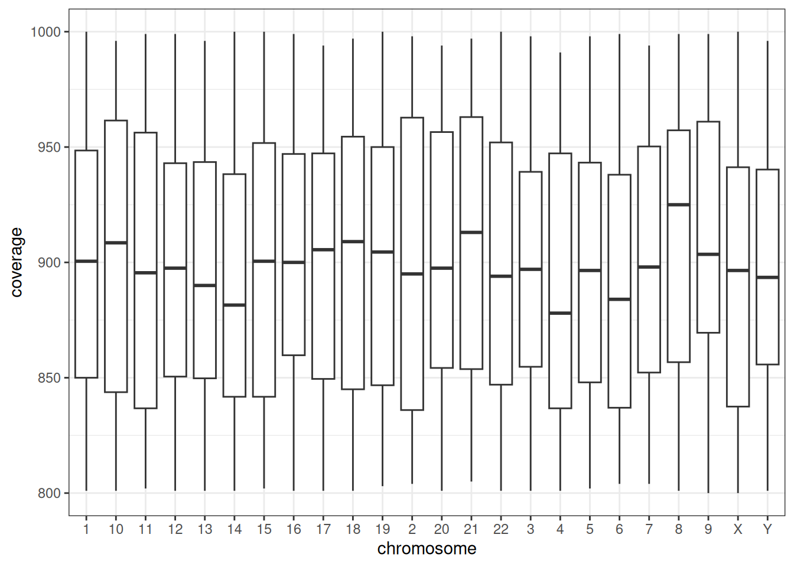
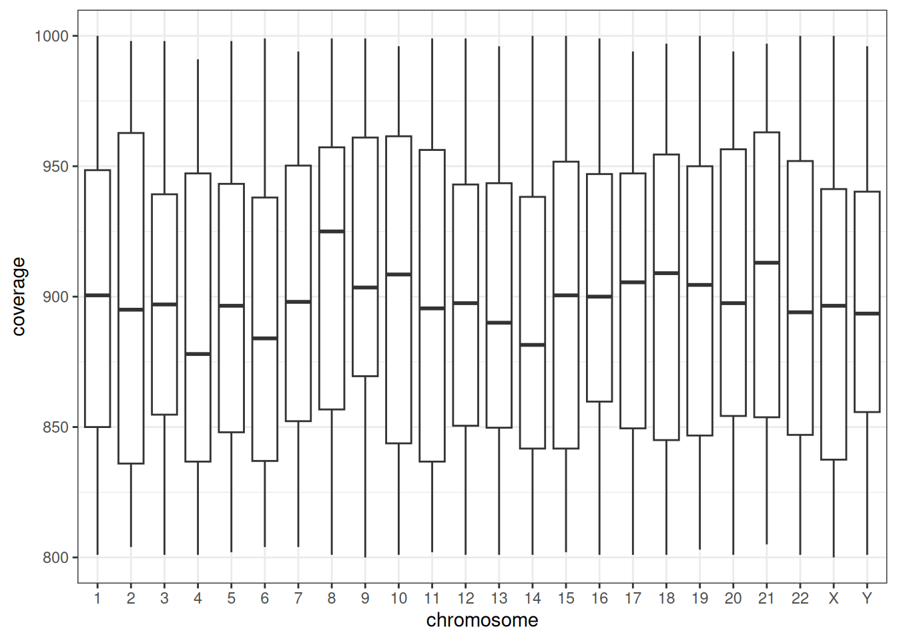

Working with chromosomes in R
Chromosome names can be difficult to work with for the following reasons:
They are a mixture of numbers (1-22) and letters (X and Y). This can make automatic assigning of data types difficult.
They are ordered - it is traditional to present chromosomes in the order 1-22 followed by the X and Y chromosomes.
They can be inconsistently formatted. For example the “chromosome” column of a table may contain information written as “1”, 1, “chr1”, “1p” etc.
chroordinate is designed to assist with some of these issues.
Reading chromosomes from Excel files
Here is an example of a small Excel file containing a column of chromosome information for autosomes 1-6. We can read it into R using read_excel.
chr_excel_short_autosomes <- read_excel(path = "data/chr_short_autosomes.xlsx",
col_types = "guess")
knitr::kable(chr_excel_short_autosomes)| chromosome |
|---|
| 1 |
| 2 |
| 3 |
| 4 |
| 5 |
| 6 |
As col_types is set to “guess”, read_excel notes that there are only numbers in the “chromosome” column and so assigns the “numeric” data type.
If the Excel file also contains information on the X and Y chromosomes, then read_excel notes that there are both numbers (autosomes) and letters (sex chromosomes) in the column and so chooses type “character”.
chr_excel_short_all <- read_excel(path = "data/chr_short_all.xlsx",
col_types = "guess")
knitr::kable(chr_excel_short_all)| chromosome |
|---|
| 1 |
| 2 |
| 3 |
| 4 |
| 5 |
| 6 |
| X |
| Y |
This behaviour then changes if the Excel is very long, which is common for large genetic datasets from next generation sequencing. In this examples, autosomes are listed first in the Excel and rows for sex chromosomes only appear after ~2000 rows. This is a problem, because the “guess” argument checks only the first 1000 rows, and decides that “chromosome” will be data type numeric. The sex chromosomes are then converted into NA, with warnings given (suppressed in this vignette).
chr_excel_long_guess <- read_excel(path = "data/chr_long.xlsx",
col_types = "guess")
typeof(chr_excel_long_guess$chromosome)
#> [1] "double"
unique(chr_excel_long_guess$chromosome)
#> [1] 1 2 3 4 5 6 7 8 9 10 11 12 13 14 15 16 17 18 19 20 21 22 NAOne option is to specify that the chromosome column is type “text” when reading the file in.
chr_excel_long_text <- read_excel(path = "data/chr_long.xlsx",
col_types = c("text", "numeric", "numeric"))
typeof(chr_excel_long_text$chromosome)
#> [1] "character"
unique(chr_excel_long_text$chromosome)
#> [1] "1" "2" "3" "4" "5" "6" "7" "8" "9" "10" "11" "12" "13" "14" "15"
#> [16] "16" "17" "18" "19" "20" "21" "22" "X" "Y"This solves the problem of the missing sex chromosomes. But it introduces a new problem that the chromosomes are not ordered correctly when plotted: chromosome 10 is ordered after chromosome 1.
ggplot(chr_excel_long_text, aes(x = chromosome, y = coverage)) +
geom_boxplot() +
theme_bw()
chroordinate can be used to solve this issue by specifying the col_type as “text” and then converting the chromosome column into a factor using factorise_chromosome.
chr_excel_long_factor <- read_excel(path = "data/chr_long.xlsx",
col_types = c("text", "numeric", "numeric")) |>
mutate(chromosome = factorise_chromosome(chromosome))
typeof(chr_excel_long_factor$chromosome)
#> [1] "integer"
str(chr_excel_long_factor$chromosome)
#> Factor w/ 24 levels "1","2","3","4",..: 1 1 1 1 1 1 1 1 1 1 ...This means that the chromosomes are in the correct ordered when plotted.
ggplot(chr_excel_long_factor, aes(x = chromosome, y = coverage)) +
geom_boxplot() +
theme_bw()
Chromosome formatting in pipeline-generated Excel files
Reading chromosome information from an Excel file can be more complicated if the Excel file has been generated by a bioinformatics pipeline.
Here is an example from the PanSolid next generation sequencing pipeline. The file contains a variant on chromosome 4, which is specified in cell A2 of the Excel file (I have not included the file for information governance reasons). In one version of the Excel output (the “Annotated” output) the A2 cell is formatted as a number. This can be seen by opening the underlying .xml:
<c r="A2">
<v>4</v>When read_excel is used to read in the file, the chromosome is formatted as 4.
However, in the other version of the Excel output (the “Unannotated” output), cell A2 is formatted as a floating point number with a decimal point (see below). But when the cell is viewed in Excel, it still appears as 4 because Excel doesn’t display the decimal point by default.
<c r="A2" s="2" t="n">
<v>4.0</v>This means that using read_excel with col_types = “text” on these two files will give different chromosome results:
| Value.from.Annotated.file | Value.from.Unannotated.file |
|---|---|
| 4 | 4.0 |
Reading chromosomes from CSV files
Unlike readxl, the guess_max argument in read_csv checks 1000 rows spread throughout the file, not just the first 1000 rows. This means that sex chromosomes are not converted into NAs, even if the file is long and col_types are guessed.
However this still leaves the issue of chromosome ordering, which can be solved by supplying the correct order as levels_chromosomes within the col_types argument.
chr_csv_long_factor <- read_csv(file = "data/chr_long.csv",
col_types = list(
"chromosome" = col_factor(levels = levels_chromosomes()$all)
))
ggplot(chr_csv_long_factor, aes(x = chromosome, y = coverage)) +
geom_boxplot() +
theme_bw()